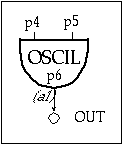

| instr 107 | |||||||||||||||||
| 107.orc | |||||||||||||||||
| 107.sco | |||||||||||||||||
|  | |||||||||||||||||
|
|||||||||||||||||
| ;Function 1 uses the GEN10 subroutine to compute a sine wave ;Function 2 uses the GEN10 subroutine to compute the first sixteen partials of a sawtooth wave f1 0 4096 10 1 f2 0 4096 10 1 .5 .333 .25 .2 .166 .142 .125 .111 .1 .09 .083 .076 .071 .066 .062 ;inst start duration i107 0 1 10000 440 1 i107 1.5 1 20000 220 2 i107 3 3 10000 110 2 i107 3.5 2.5 10000 138.6 2 i107 4 2 5000 329.6 2 i107 4.5 1.5 6000 440 2 |
|||||||||||||||||